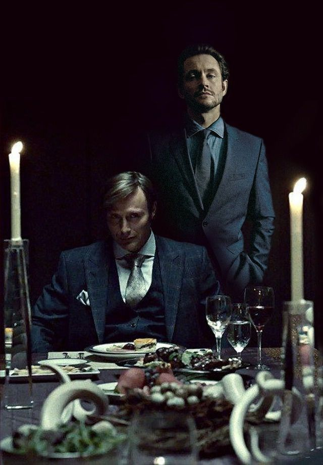
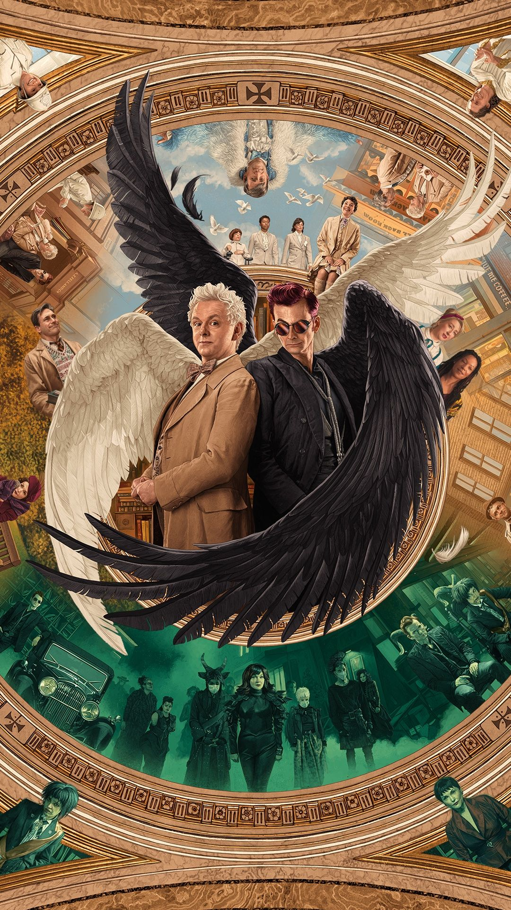
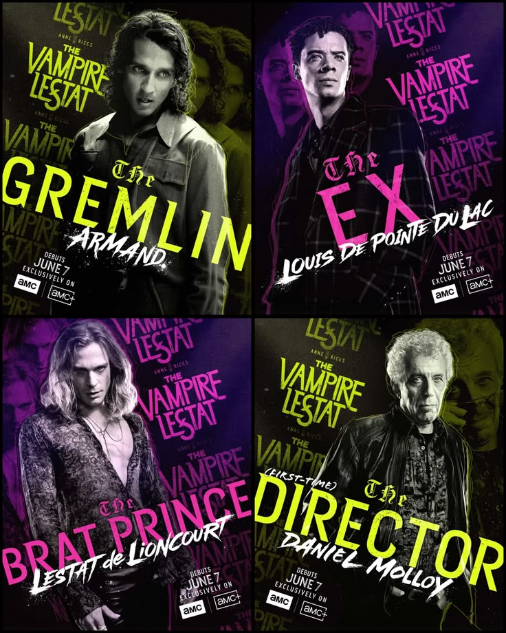
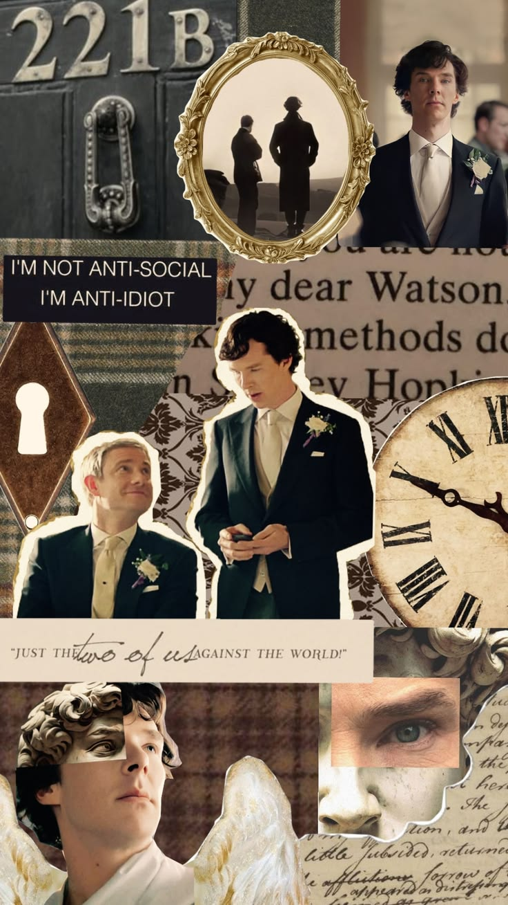
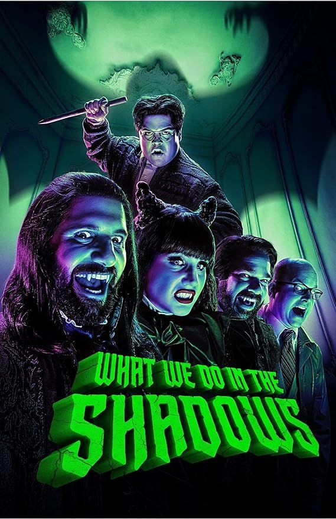

Aquí encontrarás desde vampiros con problemas emocionales hasta ángeles, demonios, detectives y asesinos que, por alguna razón, tienen relaciones interpersonales bastante complicadas. Cada serie tiene su propio estilo, pero todas comparten algo importante: personajes que claramente necesitan hablar de sus sentimientos y, aun así, deciden hacer absolutamente todo menos eso.
Así que acomódate, elige tu próximo desastre emocional y prepárate para preguntarte, episodio tras episodio: ¿son realmente amigos o simplemente llevan demasiado tiempo evitando la conversación?
Ajá, pero... ¿de qué van?

Hannibal
Will Graham tiene una habilidad extraordinaria para meterse en la mente de los asesinos que persigue, pero hacerlo está empezando a pasarle factura. Para ayudarlo, el FBI recurre al elegante y brillante doctor Hannibal Lecter, un hombre con un talento particular para entender la mente humana… quizá demasiado bien. Entre cenas, asesinatos y una relación cada vez más difícil de definir, confiar en Hannibal puede ser el peor error de Will.

Good Omens
El fin del mundo está llegando y, por una serie de circunstancias bastante absurdas, un ángel y un demonio terminan intentando detenerlo juntos. Para conseguirlo tendrán que encontrar al Anticristo, que resulta ser un niño completamente ajeno al desastre que se supone que debe provocar. Después de miles de años acostumbrándose demasiado a la compañía del otro, separarse resulta ser un problema bastante más complicado de lo esperado.

Interviw with the vampire
Louis de Pointe du Lac cuenta su historia como vampiro, comenzando con Lestat, el hombre que lo convirtió y que cambiaría su vida para siempre. Entre drama, trauma, manipulación, recuerdos cuestionables y relaciones bastante tóxicas, la serie explora lo que significa vivir eternamente mientras todos intentan controlar la historia a su manera. Y conforme avanza, la cosa se pone cada vez más oscura, turbia y desastrosa.

Sherlock
Sherlock Holmes es un sociópata altamente funcional con una capacidad extraordinaria para resolver crímenes y una capacidad considerablemente menor para comportarse como una persona normal. John Watson, un exmédico militar que acaba de volver a Londres y parece tener cierta afición por las situaciones peligrosas, termina convirtiéndose en su compañero de aventuras. Juntos resuelven asesinatos, persiguen criminales y, de alguna manera, sobreviven a convivir.

What we do in shadows
Un grupo de vampiros intenta adaptarse a la vida moderna mientras comparte una casa en Staten Island. Entre rivalidades, criaturas sobrenaturales y problemas completamente cotidianos, su existencia inmortal resulta bastante menos glamorosa de lo que podría parecer.
Tambien podrían interesarte
Gotham
Supernatural
Fargo
Our Flag Means Dead
Young Royals
Si te quedas con las ganas estos son los siguentes pasos
1- Grupos de facebook(no te preocupes en este caso no es de abuelitas), aqui encontraras a comunidades que aparte de necesitar terapia tienen mucha imaginacion.
2- Aprender a usar AO3, es basicamente wattpat pero mejor, tiene una herramienta de busqueda muy complicada pero muy útil para cuando tienes una idea muy especifica de lo que quieres de un fanfic
PD1: Luego hago una página explicando como se usa AO3.
PD2: No dejo la recomendación de ningún fanfic porque esto es para mi tarea de Diseño web , pero que sepan que tengo unos bien jugosos.
3- Pinterest sera un gran aliado para los momentos mas alucines